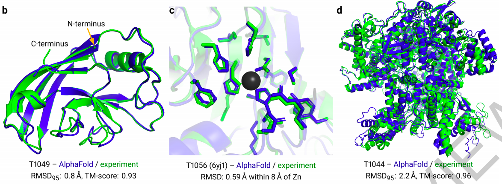
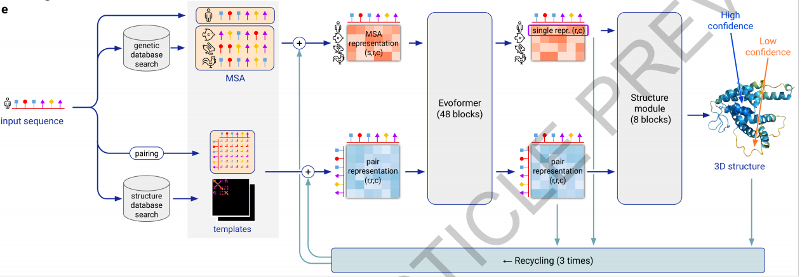
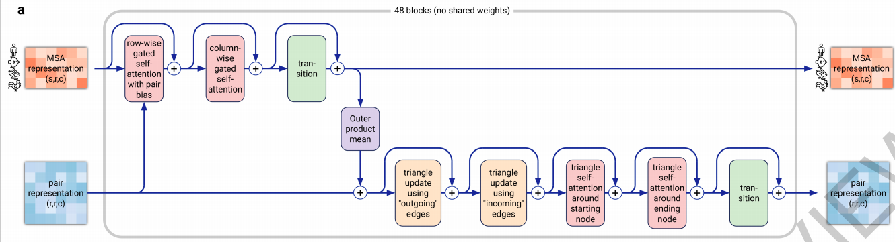
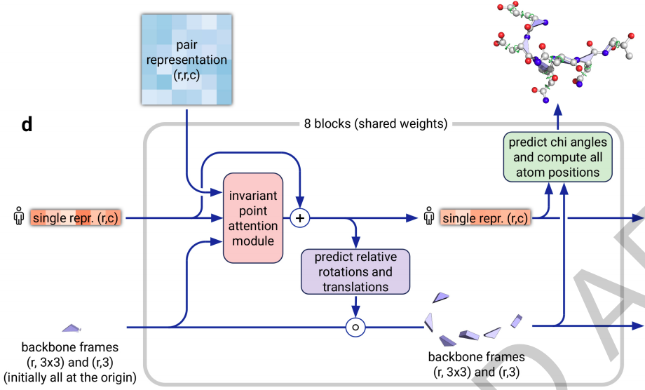

AlphaFold2是deepmind发表在nature上的一篇文章。据说，发表周期非常快(加急预览：Nature的Accelerated Article Preview)，可能是因为是同一天，science发表了另一外来自华盛顿大学的另一个竞争工作（RoseTTAFold）。nature抓紧把deepmind这篇也快速见刊，使得更有噱头（猜测）。
RoseTTAFold文章见：https://science.sciencemag.org/content/early/2021/07/14/science.abj8754；
RoseTTAFold代码见：https://github.com/RosettaCommons/RoseTTAFold
AlphaFold2的论文见：https://www.nature.com/articles/s41586-021-03819-2_reference.pdf
代码见：https://github.com/deepmind/alphafold
蛋白质对生命很重要，知道它们的结构可以促进人们对蛋白质的功能有更系统的理解。目前来说，人们已经知道10万种蛋白质的结构。(Proteins are essential to life, and understanding their structure can facilitate a mechanistic understanding of their function. Through an enormous experimental effort, the structures of around 100,000 unique proteins have been determined)
但是人们已经知道的蛋白质序列有按以十亿计。人们只知道它们的系列，而不知道它们的结构。（but this represents a small fraction of the billions of known protein sequences）
给定蛋白质的核酸序列，预测其3D结构是一个重要开放性问题，已经被研究超过半个世纪了。（Predicting the 3-D structure that a protein will adopt based solely on its amino acid sequence, the structure prediction component of the ‘protein folding problem’8 , has been an important open research problem for more than 50 years）
首先来看一下效果：在下图中，蓝色是AI预测结果，绿色是人类实验结果。可以看出来，两者高度接近。尤其是d图中，这么长的序列都做到这种效果，让人佩服。

接下来介绍一下它的主要方法。它的方法其实很简单，如下图所求：

上图看起来挺复杂，其实很简单。首先，输入是一个蛋白质序列（也许或者专业称为蛋白质的核酸序列，即图中的人序列）。然后，这个序列输到两个分支。
在上面这个分支中，我们用这个蛋白质的核酸序列去一个数据库中进行搜索，得到与它相关（例如是相似？）的若干条系列（图中有3条，分别为鱼序列、兔序列和鸡序列）。再加上输入的人序列，共计有四个序列。文章中记序列长为N_seq (图中N_seq = 6)，记序列个数为N_res （图中N_res = 4）。然后，这4条长度为6的序列（多次循环中称为 multiple sequence alignments (MSAs)），输入到一个叫做Evoformer中（Transformer的一种），最终输入同样是4条长度为6的序列。
在下面这个分支中，我们人序列求一个类似协方差矩阵一样的矩阵（图中称为pairing），得到一个6x6的矩阵。同时，也用这个人序列去一个数据库中进行搜索，得到若干个人序列pairing矩阵相关（例如是相似？）的若干个template。然后人的paring矩阵（多次循环中称为pairwise features)与template一块输入到Evoformer中，最终输出同样是6x6的矩阵。
然后，上述两个分支的输出（4条长度为6的序列和一个6x6的矩阵）经过上述过程循环3次，最终它们被输入到一个structure module里面，输入一个旋转角度和一个平移（初始化时，所有的元素（我称为元素）的旋转角度设为相同，所有的平移都设在原点）。即可预测蛋白质的空间结构了。（The trunk of the network is followed by the Structure Module that introduces an explicit 3-D structure in the form of a rotation and translation for each residue of the protein (global rigid body frames)）
这篇文章的一个贡献是Evoformer，其实非常简单，就是一个Transformer而已。具体网络结构如下图所示，这里就没有必要详细展开介绍了，因为打字很辛苦。

这篇文章的另一个贡献是structure module，其实也非常简单，就是一个加了一个attention模块的普通网络。具体网络结构如下图所示，这里就没有必要详细展开介绍了。显然，旋转分量和平移分量都是N_res个，因为序列的长度就是N_res嘛。（The 3-D backbone structure is represented as N_res independent rotations and translations each with respect to the global frame (“residue gas”, Fig. 3e). ）

上面已经基本介绍完网络结构了。接下来介绍如何训练这个网络。训练过程也是有一定的技术，充分地利用了有标签和无标签数据。首先用有标签数据进行了训练一个初步模型（如果大家没有忘记我上面写的，目前来说，人们已经知道10万种蛋白质的结构，所有有标签的数据是很少地，就算把全人类所了解的10万个结构都算上，也才10万。何况，我觉得DeepMind应该也获取不了人类全部知道的10万个数据，因此，有标签的数据量是小于10万的）。然后，作者用这个初步模型来对无标签数据打伪标签，共打了35万个标签。大家看看，这样子数据量一下子就大起来了。难怪DeepMind能在本次蛋白质比赛中取得第一名且遥遥领先。除此之外，作者还作了数据增广(Data augmentation)，使用的增广技术包括cropping and MSA subsampling 。
除了上面所提到的自蒸馏技术（即打伪标签技术），作者还使用了最新流行的自监督技术。具体地，在获取上述multiple sequence alignments (MSAs)特征时，使用了BERT来提取特征。具体地，MAS特征，是用BERT（一种Transformer）来提取的。那么，训练这个BERT时，就可以像自然语言中那样，先mask掉一些位置，再预测所mask掉的位置（即masking自监督技术）。
作者接着用一段落Interpreting the neural network来作ablation study和component analysis来解释transformer学习和各种行为。作者也用了一个段落MSA depth and cross-chain contacts来解释了影响精度的因素。
最后两段分别是related work和discussion。其中discussion很长，讨论了本文对现在和未来的重要性。
补充材料主要包括两部分：
第一部分是Method:
包括算法细节（Full algorithm details）
网络细节（Invariant Point Attention (IPA)）
输入与数据来源细节（Inputs and data sources (including BFD)）
训练细节（Training regimen）：128 TPUv3 cores， The initial training stage takes approximately one week, and the fine-tuning stage takes approximately 4 more days.
测试细节：on V100 GPU are 4.8 minutes at 256 residues, 9.2 minutes at 384 residues, and 18 hours at 2,500 residues
评价标准：Metrics
报告总结：Reporting summary：Further information on research design is available in the Nature Research Reporting Summary linked to this paper
第二部分是Data availability
输入数据集在哪下载：All input data are freely available from public sources
第三部分是 Code availability
源代码在哪里下载
软件在哪下载如tensorflow
其他专业软件在哪里下载
数据分析软件如Python3.6在哪里下载
这篇文章的主要代码由tensorflow等写成：
例如Evoformer在这：https://github.com/deepmind/alphafold/blob/d26287ea57e1c5a71372f42bf16f486bb9203068/alphafold/model/modules.py
structure module在这：https://github.com/deepmind/alphafold/blob/main/alphafold/model/folding.py
-----------------------------------
大家好，我来自fast lab。我开始不定时公开写作。这些写作主要通过两个渠道公布：一是FAST LAB官方网站；一是印象识堂（微信可访问）。欢迎大家订阅。谢谢！
FAST Lab的官方网址为：
https://wanggrun.github.io/projects/fast
除此外，还可以关注我的小伙伴王广润：
https://wanggrun.github.io/
王广聪：
https://wanggcong.github.io/
石阳：
https://www.linkedin.com/in/%E9%98%B3-%E7%9F%B3-381b521a4/
有时候这些网站打不开，请耐心多点几次。
多谢大家关注。
返回博客目录Return to all Blogs
返回主页Return to homepage